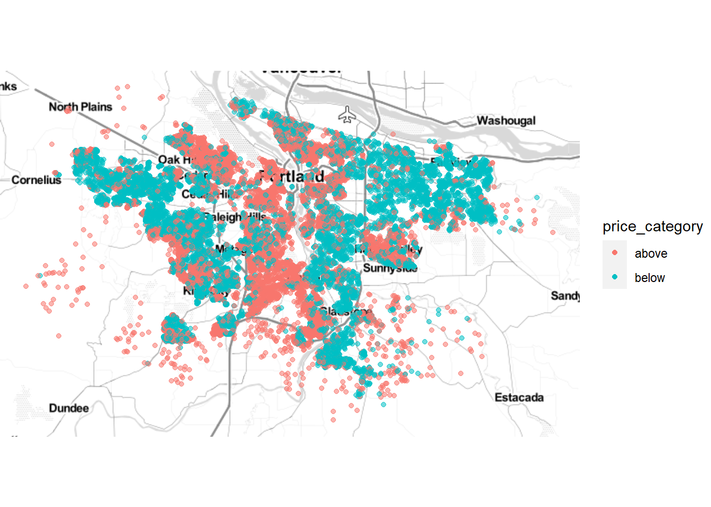

X MMM.YY Emp_ID Age Gender City Education_Level Salary Dateofjoining
1 1 2016-01-01 1 28 Male C23 Master 57387 2015-12-24
2 2 2016-02-01 1 28 Male C23 Master 57387 2015-12-24
3 3 2016-03-01 1 28 Male C23 Master 57387 2015-12-24
4 4 2017-11-01 2 31 Male C7 Master 67016 2017-11-06
5 5 2017-12-01 2 31 Male C7 Master 67016 2017-11-06
6 6 2016-12-01 4 43 Male C13 Master 65603 2016-12-07
LastWorkingDate Joining.Designation Designation Total.Business.Value
1 <NA> 1 1 2381060
2 <NA> 1 1 -665480
3 2016-03-11 1 1 0
4 <NA> 2 2 0
5 <NA> 2 2 0
6 <NA> 2 2 0
Quarterly.Rating
1 2
2 2
3 2
4 1
5 1
6 11. Background
You work for the human capital department of a large corporation. The Board is worried about the relatively high turnover, and your team must look into ways to reduce the number of employees leaving the company. The team needs to understand better the situation, which employees are more likely to leave, and why. Once it is clear what variables impact employee churn, you can present your findings along with your ideas on how to attack the problem.
Your challenge
Create a report that covers the following:
- Which designation has the highest employee turnover? Which one has the lowest?
- Investigate which variables seem to be better predictors of employee departure.
- What recommendations would you make regarding ways to reduce employee turnover?
2. Get the Data
The variables are defined as follow:
MMMM-YY: Reporting Date (Monthly)
Emp_ID: Unique id for employees
Age: ge of the employee
Gender: Gender of the employee
City: City Code of the employee
Education_Level: Education level : Bachelor, Master or College
Salary: Salary of the employee
Dateofjoining: Joining date for the employee
LastWorkingDate: Last date of working for the employee
Joining Designation: Designation of the employee at the time of joining
Designation: Designation of the employee at the time of reporting
TotalBusinessValue: The total business value acquired by the employee in a month (negative business indicates cancellation/refund of sold insurance policies)
Quarterly Rating: Quarterly rating of the employee: 1,2,3,4 (higher is better)
3. Prepare and Analyze the Data
- This dataset contains 19104 obs. of 13 variables. We see some duplicate Employees ID, and we should remove them
Now we have 2,381 rows
X MMM.YY Emp_ID Age
Length:2381 Min. :2016-01-01 Length:2381 Min. :21.00
Class :character 1st Qu.:2016-01-01 Class :character 1st Qu.:29.00
Mode :character Median :2016-07-01 Mode :character Median :33.00
Mean :2016-08-29 Mean :33.09
3rd Qu.:2017-05-01 3rd Qu.:37.00
Max. :2017-12-01 Max. :58.00
Gender City Education_Level Salary
Female: 977 Length:2381 Bachelor:795 Min. : 10747
Male :1404 Class :character College :784 1st Qu.: 39104
Mode :character Master :802 Median : 55276
Mean : 59209
3rd Qu.: 75765
Max. :188418
Dateofjoining LastWorkingDate Joining.Designation Designation
Min. :2010-04-01 Min. :2015-12-31 1:1026 1:751
1st Qu.:2015-06-29 1st Qu.:2016-01-07 2: 815 2:866
Median :2016-07-21 Median :2016-01-19 3: 493 3:611
Mean :2016-02-08 Mean :2016-03-12 4: 36 4:132
3rd Qu.:2017-05-02 3rd Qu.:2016-01-26 5: 11 5: 21
Max. :2017-12-28 Max. :2017-12-18
NA's :2279
Total.Business.Value Quarterly.Rating
Min. :-1590270 1:1649
1st Qu.: 0 2: 411
Median : 0 3: 216
Mean : 291175 4: 105
3rd Qu.: 250590
Max. :10398160
The median age is 33 years old
Now, we need to know that in order to predict if the employee will leave the company or not can be best predicted if we have last working day info available and hence although the missing percentage is high, it’s not because of Null values but the employees are not planning to leave the company and hence have not provided the info.Therefore we should not remove this feature from our data, instead we need to treat this as our target variable.
Salary goes from 10747 to 188418 dollars
Most of the employees have a Master degree
Show the code
empl_churn <- empl_turnover %>% mutate(Churn= ifelse(is.na(LastWorkingDate), "No", "Yes"))
empl_churn$Churn.Numeric <- as.numeric(as.factor(empl_churn$Churn))-1
glimpse(empl_churn)Rows: 2,381
Columns: 16
$ X <chr> "1", "4", "6", "11", "14", "19", "22", "23", "29"…
$ MMM.YY <date> 2016-01-01, 2017-11-01, 2016-12-01, 2016-01-01, …
$ Emp_ID <chr> "1", "2", "4", "5", "6", "8", "11", "12", "13", "…
$ Age <int> 28, 31, 43, 29, 31, 34, 28, 35, 29, 39, 30, 42, 2…
$ Gender <fct> Male, Male, Male, Male, Female, Male, Female, Mal…
$ City <chr> "C23", "C7", "C13", "C9", "C11", "C2", "C19", "C2…
$ Education_Level <fct> Master, Master, Master, College, Bachelor, Colleg…
$ Salary <int> 57387, 67016, 65603, 46368, 78728, 70656, 42172, …
$ Dateofjoining <date> 2015-12-24, 2017-11-06, 2016-12-07, 2016-01-09, …
$ LastWorkingDate <date> NA, NA, NA, NA, NA, NA, NA, NA, NA, NA, NA, NA, …
$ Joining.Designation <fct> 1, 2, 2, 1, 3, 3, 1, 1, 1, 3, 2, 1, 1, 3, 1, 1, 1…
$ Designation <fct> 1, 2, 2, 1, 3, 3, 1, 1, 4, 3, 2, 1, 1, 3, 1, 1, 2…
$ Total.Business.Value <int> 2381060, 0, 0, 0, 0, 0, 0, 500000, 250000, 0, 346…
$ Quarterly.Rating <fct> 2, 1, 1, 1, 1, 1, 1, 4, 1, 1, 1, 2, 1, 1, 4, 2, 2…
$ Churn <chr> "No", "No", "No", "No", "No", "No", "No", "No", "…
$ Churn.Numeric <dbl> 0, 0, 0, 0, 0, 0, 0, 0, 0, 0, 0, 0, 0, 0, 0, 0, 0…Turnover
Number of employees that left the company:
The overall attrition rate in the company in average is 4.28%, which means that 102 employees have left the company during 2016-2017.``
Show the code
table(empl_churn$Churn)
No Yes
2279 102 Show the code
ggplot(empl_churn,aes(x = Churn, group = Gender)) +
geom_bar(aes(y = ..prop.., fill = factor(..x..)),
stat="count", color = "black", alpha = 0.7) +
geom_text(aes(label = scales::percent(..prop..),
y= ..prop.. ), stat= "count", position = position_stack(vjust = 0.5), size = 4.5) +
facet_grid(~Gender) +
scale_y_continuous(labels = scales::percent)+
guides(fill = F)+
labs(
x = "Left", y = "Percentage",
title="Turnover Proportion by Gender")+
scale_fill_manual(values=c("gray", "#2166AC"))+
theme(text = element_text(size = 12),
plot.title = element_text(hjust = 0.5),
title = element_text(size = 12))+
ggpubr::theme_pubclean()
There is a small difference in the proportion of women and men that left the company.
Show the code
empl_turnover_prop <- empl_churn %>%
tabyl(Designation, Churn) %>%
adorn_percentages("row")
kable(empl_turnover_prop, caption = "Designation vs Attrition")| Designation | No | Yes |
|---|---|---|
| 1 | 0.9227696 | 0.0772304 |
| 2 | 0.9607390 | 0.0392610 |
| 3 | 0.9852700 | 0.0147300 |
| 4 | 1.0000000 | 0.0000000 |
| 5 | 0.9523810 | 0.0476190 |
- The data shows that Destination 1 and 5 has the highest employee turnover rate, destination 4 and 3 has the lowest rate.
Attrition vs Age
The majority of employees that left the organization are in their 30’s , and the proportion steadily declined.
Show the code
### Age vs Turnover
empl_churn %>%
group_by(Age, Churn)%>%
ggplot(aes(x = Age, fill = Churn)) +
geom_histogram(bins = 30L) +
scale_fill_manual(values=c("gray", "#2166AC"))+
ggpubr::theme_pubclean()+
labs( x= "Age",
y= "Number of Employees",
title = "Attrition vs Age")+
theme(plot.title = element_text(size =12, face = "bold", hjust = 0.45),
legend.position="bottom")
Education vs Churn
Show the code
result <- compare_props(
empl_churn,
var1 = "Education_Level",
var2 = "Churn",
levs = "No",
comb = "Bachelor:College"
)
summary(result, show = FALSE)Pairwise proportion comparisons
Data : empl_churn
Variables : Education_Level, Churn
Level : No in Churn
Confidence: 0.95
Adjustment: None
Education_Level No Yes p n n_missing sd se me
Bachelor 766 29 0.964 795 0 0.187 0.007 0.013
College 740 44 0.944 784 0 0.230 0.008 0.016
Master 773 29 0.964 802 0 0.187 0.007 0.013
Null hyp. Alt. hyp. diff p.value
Bachelor = College Bachelor not equal to College 0.02 0.063 .
Signif. codes: 0 '***' 0.001 '**' 0.01 '*' 0.05 '.' 0.1 ' ' 1Show the code
plot(result, plots = "dodge", custom = TRUE)+
scale_fill_manual(values=c("gray", "#2166AC"))+
ggpubr::theme_pubclean()+
labs( x= " ",
y= "% of Churn",
title = "Attrition vs Education")+
theme(plot.title = element_text(size =12, face = "bold", hjust = 0.45),
legend.position="bottom")
- Employees with College degree have the highest number of people living the company
Show the code
library(corrplot)
GGally::ggpairs(empl_churn[, unlist(lapply(empl_churn, is.numeric))]) 
4. The Model- Binary Logistic regression for churn prediction
Show the code
ggplot(empl_churn) +
aes(x = Salary, y = Churn, fill = Churn) +
geom_boxplot() +
scale_fill_manual(values=c("gray", "#2166AC"))+
ggpubr::theme_pubclean()